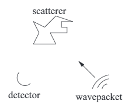
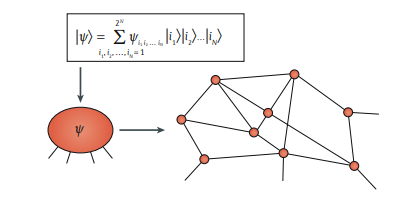
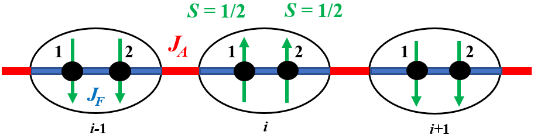

Research
A space to share what I have done for the research I've done so far :>
Quantum Simulations of Antigen-Antibody reactions
An interdisciplinary research project on bioinformatics, computational biophysics and quantum technologies, as a part of my research internship within the Faculty of Engineering, Department of Civil and Environmental Engineering, Imperial College London

Image from: Chang, T.-C., Wu, C.-C., Wang, S.-C., Chau, L.-K. & Hsieh, W.-H. Using a fiber optic particle plasmon resonance biosensor to determine kinetic constants of antigen–antibody binding reaction. Analytical Chemistry 85, 245–250 (2012).
Supervisor: Dr Po-Heng (Henry) Lee
Project Brief:
An exploratory project, assisting a company to understand the interactions between antigen-antibody reactions on a gold nanoparticle surface
using density matrix methods.
|
Q-Wave: Simulating sound waves using Quantum Algorithms
An interdisciplinary research project on sound wave propagation and quantum technologies, as a part of my research internship within the MAPS Faculty, UCL

Image from: P.C.S. Costa, S. Jordan, and A. Ostrander, Quantum algorithm for simulating the wave equation, Phys Rev. A 99, 012323 (2019).
Supervisor: Dr. Reza Haqshenas
Project Brief:
Wave equations are well-known to describe physical waves. In this research, we hope to solve a particular form of the wave equation,
known as the Helmholtz equation, in 2 dimensions. We will be using the HHL algorithm to solve the equation in the frequency domain.
At the end of the project, a report will be written, a paper will be submitted to a peer-reviewed journal and a first version of a wave solver, written in Python, will be published.
|
Classifying Topological Phases of Quantum Matter using Tensor Networks
A literature review research project as a part of my Natural Sciences degree

Image from: Orús, R. Tensor networks for complex quantum systems. Nat Rev Phys 1, 538–550 (2019).
Supervisor: Professor Andrew Green
Abstract:
It is long thought that Landau’s symmetry-breaking theory can help classify all
phases of matter. However, this theory is incomplete. Quantum topological phases
of matter are phases of matter which cannot be classified using this spontaneous
symmetry-breaking theory, and are robust against perturbations. They have great
significance in quantum technologies. Mathematical objects known as tensor networks
can help us classify these phases of quantum matter. In this review, we discuss the
ideas surrounding topological matter and tensor networks by providing analogies and
examples. We focus on how tensor network methods can be used to classify topological
phases of matter. Its significance in quantum technologies and the uses of tensor
network beyond classification are discussed. The potential future works are identified
and outlooks of the subject are given. The reference section at the end gives a list of
literature for further reading.
Please feel free to contact me if you would like to see my literature review
|
Topological Phase Transition in S=1/2 spin chains with alternating ferromagnetic (FM) and antiferromagnetic (AFM) couplings and exchange anisotropy
A summer research project on theoretical condensed matter physics, as a part of the UCL CMMP Brian Duff Summer Studentship

Supervisor: Dr. Frank Kruger
Abstract: A 1D S=1/2 spin chain with alternating FM and AFM couplings is investigated in the limit of small
magnetic anisotropy. The model is treated in terms of a simple nearest-neighbour hamiltonian, then performing a Jordan-Wigner
transformation to map the spin 1/2 operators to spinless fermions.
In the regime of strong anisotropy (XY case), fermions will be non-interacting and is exactly solvable. The model will be equivalent to
a Haldane spin chain, exhibiting topological order, hence will be stable against small perturbations.
Interactions of the studied regime is treated in a mean-field approximation, requiring to solve
coupled self-consistency equations numerically using Python and Mathematica.
The topological phase boundary is determined numerically using a bisection method as a function of the relative strength of the exchange coupling and the magnetic exchange anisotropy.
A one page report is written as a summary, with a more detailed appendix explaining the steps I took.
|
The 3-Coloured Distributive Consensus Problem
A summer research project on Cellular Automata and phase transitions, as a part of the Wolfram Physics Project and Wolfram Summer School: Fundamental Physics Track 2021.
 
Supervisor: Hatem Elshatlawy & Stephen Wolfram
Brief Introduction to the Wolfram Physics Project (WPP):
Since Sir Issac Newton developed the foundations of mathematical physics, mathematics has been used extensively to model natural phenomenon. To investigate
what nature does, equations have to be derived and solved, and so the fundamentals of physics are described using mathematics. The WPP implements a unique
approach to discover and explain the fundamental theory of physics in terms of graphs, hypergraphs, rules and computations, while conforming with modern mathematics.
A very important principle to bear in mind is that simple rules produce complex behaviours.
For example,
cellular automaton has shown to demonstrate phase transition behaviours in the 2D Ising Model (see link), which closely relates to my project. My aim was to
find a rule that generates similar phase transistion behaviours, but in a 3-colored case.
For more information about WPP, this piece of writing from the CEO of Wolfram Research, Dr. Stephen Wolfram, which I think summaries the WPP very well: Even beyond Physics: Introducing Multicomputation as a Fourth General Paradigm for Theoretical Science
Abstract: Consider a collection of cells with a certain fraction of 3 distinct colours. It is hypothesised that some rule, of which when applied to the system, will turn all the cells to the majority colour when that fraction of the colours exceeds a certain threshold, reaching global consensus. The system will also exhibit indeterminate states when there are equal weights of colors, or ”phase transitions”.
A general majority rule has been hypothesised and studied using grid cellular automata and Mathematica, in cases of 2 and 3 colors.
Link for the report, featured in the Wolfram Community, with a staff picked Featured Contributor Badge: https://community.wolfram.com/groups/-/m/t/2312007
|
|